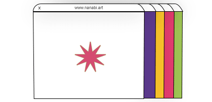

Editor rápido de cliques (ajuste em %)
Selecione o alvo e ajuste top/left/width/height como porcentagem da largura do slice correspondente. Clique "Salvar" para aplicar.
Alvo
CTA 1 (Behance)
CTA 2 (Email)
Ícone Behance
Ícone LinkedIn
Ícone Email
Slice (1-4)
Top (%)
Left (%)
Width (%)
Height (%)
Salvar
Ocultar editor
Para remover as bordas azuis (debug), apague a classe
debug
das tags
.overlay
no código final.